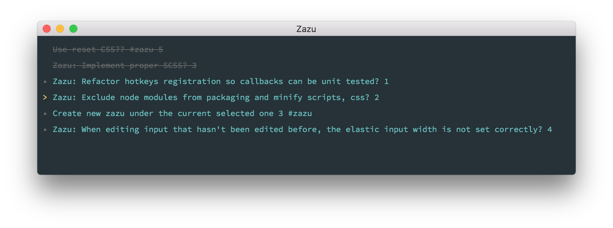

Dead simple, keyboard shortcut todo app. Theme inspired from material theme, and built with
To check the keyboard shortcuts type ?

Contribute
Install modules with npm i and run npm start to boot development environment.
Test
To run tests use npm test.
Package
To package zazu, currently only for darwin platform, use npm run deploy.